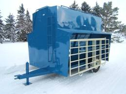
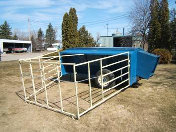

|

250 bu. Creep-Feeder shown with �Magic Panel� |
The 250 bu. (5� x 10�) Creep-Feeder is dual purpose. It has enough headroom to be used as a small Self-Feeder when panels are removed. View Set-up Video |

130 bu Creep-Feeder on Wheels with �Magic Panel�
Creep Feeders feature our�New “Magic Panel”�
- Panels won’t block lid for filling
- Panels keep cows away from feed open, closed or any where in between.
- No pins to pull or put in
- Simple to open and close
- Panels keep cows away from feed open, closed or any where in between.
- No pins to pull or put in
- Simple to open and close
- Calves do not need to make a 180 degree turn to exit creep pen
- Panels remove easily from feeder for Self-Feeding
- 250 bu. (5’ x 10’) Creep-Feeder is dual purpose. It has enough headroom to be used as a small Self-Feeder when panels are removed.

250 bu. Creep-Feeder on Wheels shown
with �Magic Panel�
The 250 bu. Creep/Self-Feeder on Wheels has the following features:
- 12,000 lb Axle is guaranteed for transport when feeder is full
- New Highway rated 10 Ply Radials (Not Blems) on sixteen inch rims
- Replaceable 7,000 lb Screw Jack on 9 inch jack pad
- Salt & Mineral attachment with Rubber Tubs
- Full length Lid
- Lid Locks
- Lid Handle that allows opening from the ground
- Full length Lid Deflector to prevent feed jamming in behind lid
- New Weatherproof Chutes open up to seven inches.
- Feeders clean out completely with New full width Vee bottom.
- Generously proportioned Feed Troughs are 5” deep by 16” wide by 10’ long
- Feed on one or both side
- Twenty inch Eaves for weather protection
- Full Length Ladders inside and out for easy access to the top and inside of the feeder
Nifty Livestock Equipment Ltd.
1999-2016
About Nifty / Feed Equipment / Livestock ID / Handling Equipment / Dealers Page / Contact Us